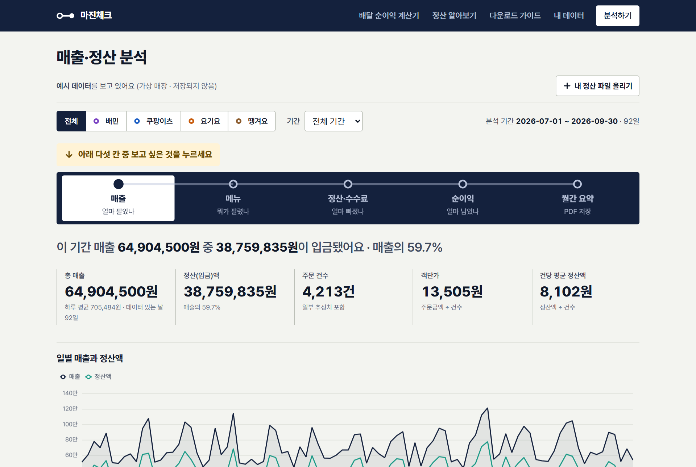
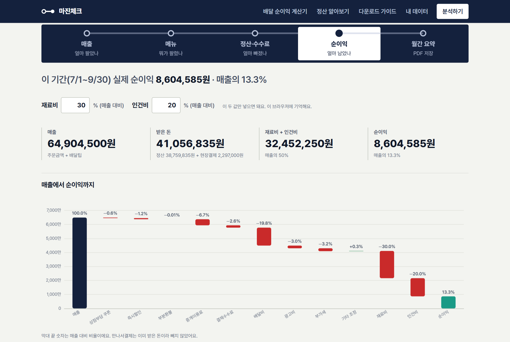
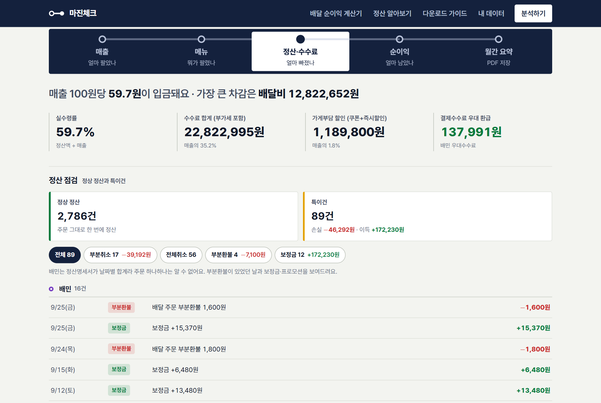
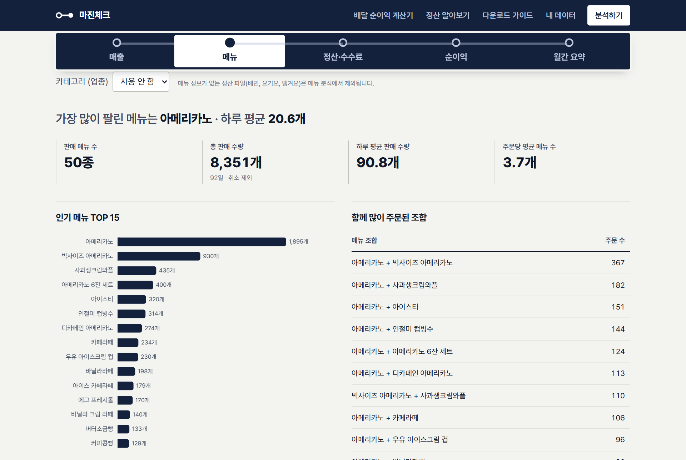
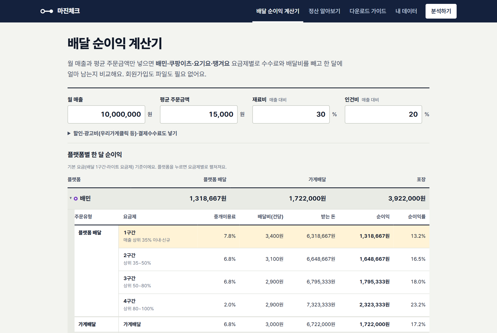

마진체크
배달앱 정산 엑셀을 올리면 얼마 팔았고, 수수료로 얼마 나갔고, 실제로 얼마 남았는지 보여 줍니다. 할인이나 광고를 바꾸면 순이익이 어떻게 달라지는지도 미리 계산해 봐요.
웹사이트 · 설치·회원가입 없음 · 무료

이런 점이 좋아요
그래서 얼마 남았는지
매출에서 쿠폰, 중개이용료, 결제수수료, 배달비, 광고비, 부가세를 차례로 빼고, 재료비·인건비 비율만 넣으면 순이익까지 보여 줍니다.

수수료가 어디서 새는지
매출 100원당 실제로 입금된 돈, 가장 크게 빠진 항목을 한 줄로 알려 줘요. 부분취소·환불·보정금 같은 특이건만 따로 모아 봅니다.

뭐가 잘 팔렸는지
메뉴별 판매량과 매출, 요일·시간대별 주문을 봅니다. 주문 시각과 메뉴가 들어 있는 정산 파일(쿠팡이츠 등)에서 볼 수 있어요.

파일이 없어도 계산기로
월 매출과 평균 주문금액만 넣으면 배민·쿠팡이츠·요기요·땡겨요 요금제별로 한 달에 얼마 남는지 비교해요. 입점이나 요금제를 바꿀 때 먼저 확인해 보세요.

사용 방법
PC든 휴대폰이든 브라우저만 있으면 됩니다.
-
배달앱 사장님 사이트에서 정산 엑셀 받기
앱마다 받는 곳이 달라요. 마진체크의 다운로드 가이드에 화면 사진과 함께 정리돼 있어요.
배민 정산명세서는 이메일로 오고, 비밀번호는 생년월일 6자리예요.
-
[분석하기] → [내 정산 파일 올리기]
여러 앱 파일을 한꺼번에 올려도 돼요. 어느 앱 파일인지 알아서 구분합니다.
-
보고 싶은 칸 누르기
매출(얼마 팔았나), 메뉴(뭐가 팔렸나), 정산·수수료(얼마 빠졌나), 순이익(얼마 남았나), 월간 요약(PDF 저장).
-
다음 달에도 올리기
올린 결과는 그 브라우저에 쌓여서, 달마다 올리면 지난달과 비교할 수 있어요.
자주 묻는 질문
정산 파일이 다른 곳으로 가지 않나요?
네. 엑셀을 읽고 계산하는 일은 모두 내 브라우저 안에서 하고, 파일을 서버로 보내지 않아요. 분석 결과도 그 브라우저에만 저장됩니다.
수수료율이 바뀌면요?
수수료율을 미리 정해 두지 않고 올린 정산 파일에서 거꾸로 계산해요. 정책이 바뀌어도 새 파일만 올리면 따라갑니다.
배민 파일로는 시간대·메뉴가 안 보여요
배민 정산명세서에는 날짜별 합계만 있고 주문 시각과 메뉴가 없어서 그래요. 시간대·메뉴 분석은 주문별 내역이 있는 파일에서만 됩니다.